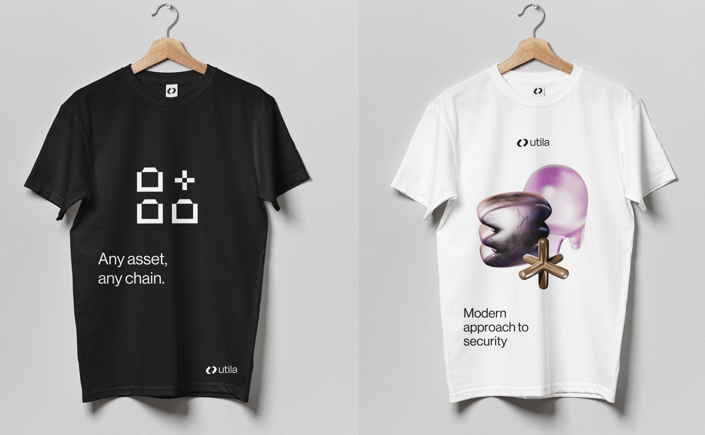
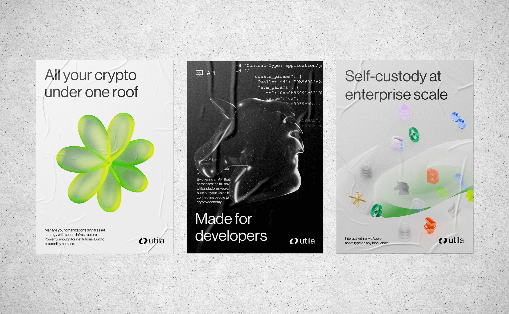
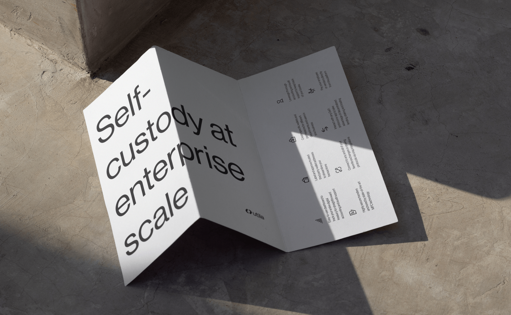
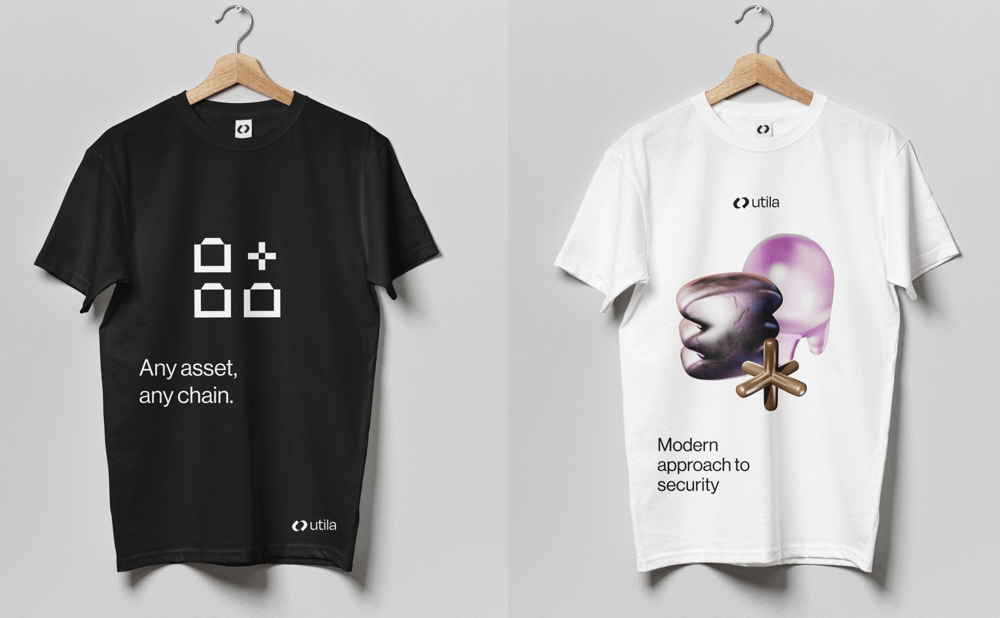
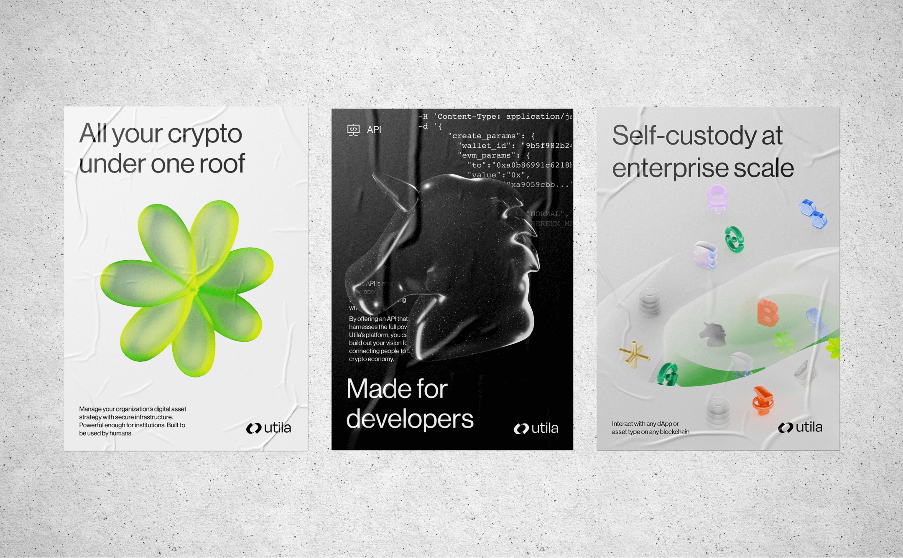
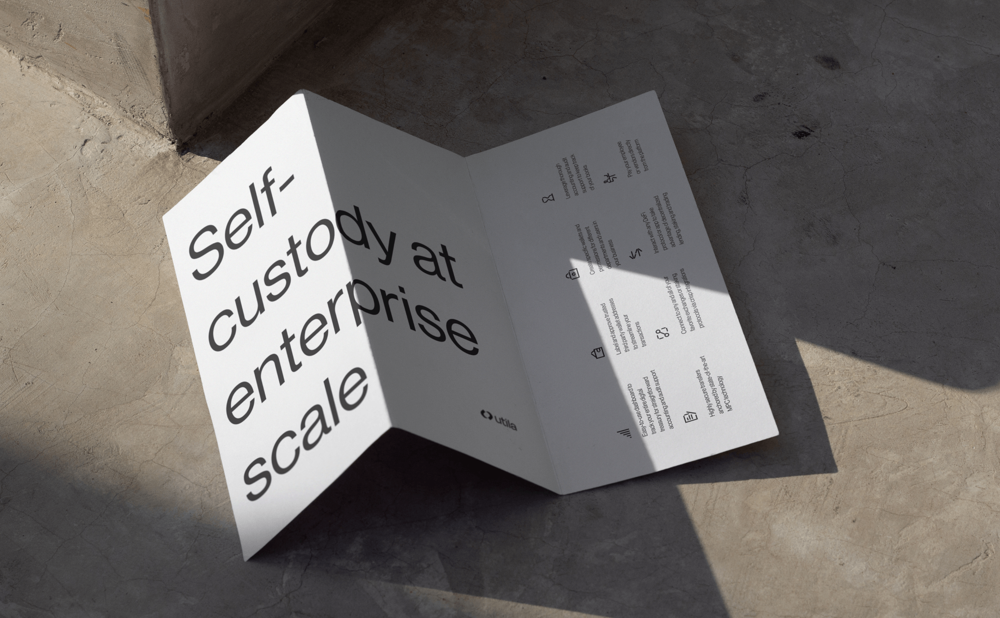

A 10-day Brand sprint for UtilaBrand Story - The future economy will be built on digital assets.
Recent crypto market events have decreased trust and certainty for companies searching for ways to handle digital assets securely and independently.
There’s a demand for true ownership, leading to a rise in self-custody and avoiding reliance on third parties.
Utila provides a secure and user-friendly self-serve custody infrastructure for businesses to build, hold, store, and transfer digital assets.
It is designed to offer unparalleled security and multi-party computation, allowing the highest levels of protection from external and internal threats.
It is simple to setup and use—a visual experience to own your crypto assets.
It is modular, highly customisable, asset-agnostic, and open to multiple third-party integrations.
Its API is a blank canvas to build wallets at scale with a much-improved experience for developers.
We are building a powerful, hyper-secured wallet made for humans to easily own, build, store, and transfer digital assets.
Let’s build the new wave of reliable crypto products, together!
Client |
Utila
Creative Director | Eden Vidal, Inbal Lapidot Vidal
Brand Designer | Kate Holub, Ortal Bremler
Animation | Anastasia Shopine
 


